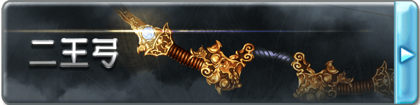

■二王弓（D+500）
鎮壓整個蒼天之下的威脅、具有無與倫比天賦的才人-索恩所使用的長弓，沒有人能夠從這把弓下逃脫，光束的豪雨會在一瞬間降臨在每一個敵人的身上。外形是兩個組成X形的弓身，從四個末端引出的弓弦同樣交叉成X狀。
作為武器具有5L傷害，【破甲5】的性能，二王弓無法使用普通的箭矢，當它展開的時候，數支由光組成的箭矢會組成圓形環繞在自身的身周，中間會具現出星云的圖案，你每用掉一支箭矢就會自動補充一支。
■[天眸]二王弓·真（C+1000）
這個階段的二王弓才會展現出自己真正的光輝，弓翼上會展開紫色的流光，弓弦會化為流光。
作為武器的性能提升，獲得了【能量武器】以及【魔眼的狩人】特性。
【魔眼的狩人】
無人可以從二王弓的毀滅之光下逃脫，二王弓所射出的箭矢將會在離開弓身之際，分裂為數道流光，自動攻擊其覆蓋范圍內的所有敵對單位。
■[天眸]二王弓·○（B+2000）
這個階段的二王弓已經不僅僅是索恩的遺產，將會漸漸染上屬于你的色彩，在其他人的手里二王弓將失去一切效果和能力，變為一把普通的長弓。從以下幾個詞綴中選擇一個作為二王弓的后綴，這將會使二王弓所造成的任意傷害轉變為對應的類型。與此同時，二王弓的上端會出現對應屬性顏色的龐大流光。
焔:灼熱，赤
雪:凍寒，蒼
界:物理，黃
凪:音波，青
煌:神圣，白
煉:褻瀆，黑
作為武器的性能再度提升，獲得了【8加骰】的特性，并且獲得特性【腐敗（Depravity）】和【射手之王】。
【腐敗（Depravity）】
受到二王弓傷害的單位會承受各種異常狀態，從以下的異常中隨機選擇一個發動：
弱體耐性down(在承受異常的時候，效果量提升等同傷害的三分之一，持續一場景)
毒 (效果量等同傷害，效果等同流血，但是使用智力+醫療解除)
燃燒 (效果量等同傷害)
腐敗 (效果量等同傷害，效果等同流血，但是只能通過自身的強韌解除)
暗闇 (效果量等同傷害，效果等同炫目)
魅惑 (效果量等同傷害)
不死 (當受到治療效果時，該效果轉為等同的傷害，持續一次，每3點傷害額外提升一次)
睡眠 (效果量等同傷害，效果等同糾纏，但是嚴重狀態轉為睡眠)
麻痺 (效果量等同傷害)
攻擊down (攻擊上承受等同傷害的減值，減值取高不疊加，持續一場景)
防御down (防御上承受等同傷害的減值，減值取高不疊加，持續一場景)
以上效果均視為異常狀態。
【射手之王】
對于任何受到二王弓傷害或異常的單位，若其身上還保持著對應傷害或者異常，那么其一旦進入持有者的敏感范圍就會立刻被定位，這視為一個C級的魔幻本質偵查效果。
■[天眸]二王弓·○○（A+4000）
失去了華麗的外表，二王弓的X形弓身的下端收束合并，轉變為Y形，弓身轉變為無華的黃銅質地，頂端上鑲嵌了對應屬性顏色的寶石。
對應在B級選擇的屬性，二王弓的后綴將會再次轉變，并帶來新的效果。
焔→紅天:武器攻擊造成的傷害將會帶來等同傷害的【燃燒】
雪→蒼天:武器攻擊造成的傷害將會帶來等同傷害的【凍結】
界→轟天:武器獲得【眩暈】特性，并且威猛提升10點
凪→疾天:武器獲得【超級貫穿】特性，并且高速提升10點
煌→白天:武器獲得【光明】特性，持有者在死亡后，靈魂會被保護在武器中，若被帶回主神空間則可以支付C+1000重塑身體而復活。
煉→黒天:武器獲得【黑暗】特性，被該武器擊殺的單位將無法以任何方式復活，這是一個A級的詛咒來源效果。
此外二王弓作為長弓的性能達到了極致，武器傷害提升為12L，高速提升至20，獲得【超級貫穿】與【神兵】特性。這一階段的二王弓無法被任何方式破壞。此外二王弓獲得了【The Clincher】和【壓迫之影】兩個特性。
【The Clincher】
當對象受到二王弓造成的傷害時，傷害會得到提升，其數值等同目標身上的異常種類。
【壓迫之影】
當以二王弓造成異常狀態時，在計算完異常效果之后，持有者可以選擇將該異常提升等同豁免后的數值或者6點（取低）。
▓▓二王弓技-二王雙極雷洪
若無特殊說明，該技能樹下的技藝只能由二王弓為媒介來發動。
■憐憫之光（Merculight）（C+1000）
◆發動動作:移動
◆使用間隔:5輪
◆効果時間:1輪/3輪
「息を潛めて、研ぎ澄ます…」
發動后的一輪中，對應下一次的涉及自身的攻擊，自身可以立刻使用反射動作進行一次距離不大于自身速度的移動。
此外在之后的3輪中，自身的射擊的射程提升2倍。
■雙王之爭（C+1000）
◆發動動作:標準
◆使用間隔:10輪
◆効果時間:立即
「東西を瞬く間に橫斷せし二王の炎、眼前の敵を焼き貫け！」
將目標污穢引燃的不凈之炎，以箭矢作為引線。
對目標進行一次射擊，造成傷害即可發動，對于目標身上的不良狀態，若為原本是一次短休息獲得進行豁免機會，一次長休息獲得移除機會的，則改為一次長休息才能獲得豁免機會，24小時的修養才能獲得移除機會；若原本為持續一個場景，則改為持續至下一次短休息；若是以時間計數，則持續時間提升90秒。這是一個C級的詛咒來源效果。
■深度腐敗（Deep Depravity）（B+2000）
◆發動動作:移動
◆使用間隔:2輪
◆効果時間:1輪
「追い詰めるわ」
該能力可以至多5次重復購買，且只能在二王弓提升至B級后購買。
持續期間內，自身的攻擊獲得【腐敗深度2X】（X為購買該能力的次數），每當【腐敗（Depravity）】被觸發時，目標會額外再獲得等同【腐敗深度】個各不相同的隨機異常。
■星芒Howser（A+4000）
◆發動動作:標準
◆使用間隔:一場景內再使用不可
◆効果時間:特殊
「この眼で捉えた！ 射抜いてみせる、アストラルハウザー！」
射出如同星光般極速的箭矢，被命中的敵人將陷入無盡的麻痹地獄。
對目標進行一次射擊，本次射擊視為接觸攻擊，并且高速提升20。結算完傷害之后目標須進行一次DC等同傷害的+12的強韌檢定，若失敗則會陷入定身狀態，此后每次在其行動開始時其會再次獲得一次對抗的機會，若成功則擺脫定身狀態，反之則再維持一輪。特殊的，在該定身狀態下，目標也無法進行需要語言要素的行動。這個狀態至多持續180秒，視為一個A級的創傷來源效果。